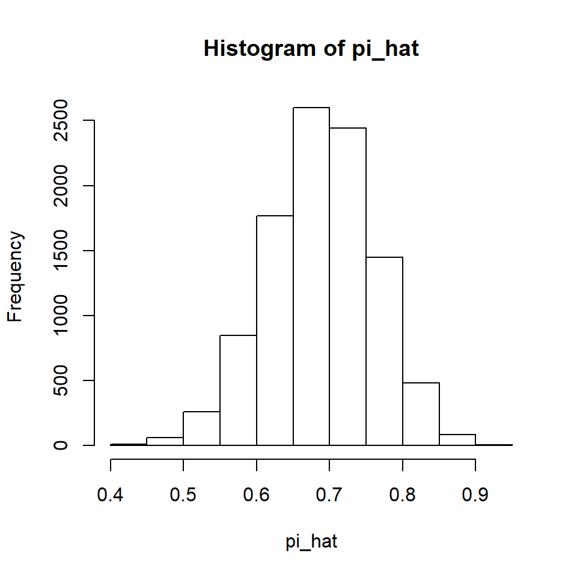
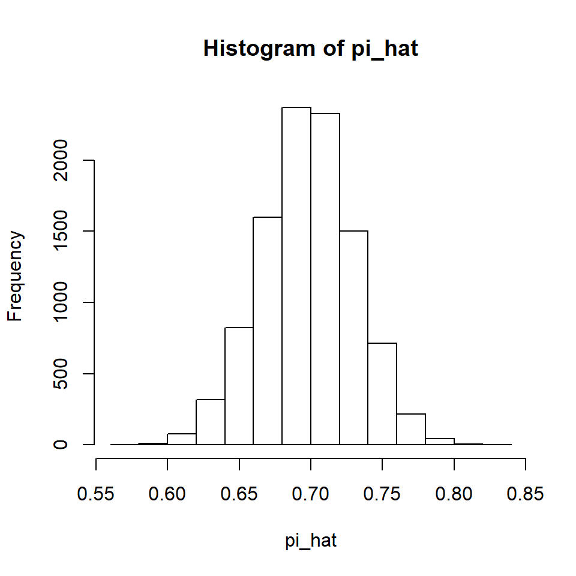

lsprop.RmdThe Central Limit Theorem (CLT) provides a means of inference for proportions with large sample sizes. This is because with a large sample size, the sampling distribution of proportions is approximately normal.
The Rlab package is required for this vignette. All other functions used are in the base package.
library(Rlab)A sampling distribution is a distribution of a statistic obtained by random resampling numerous times from the population. For each sample of size n that is randomly selected, we calculate the value of the statistic. After doing this repeatedly (in theory an infinite number of times), the distribution of these statistics is a sampling distribution.
When observing Bernoulli events, the typical parameter of interest is the population proportion, or rate, of success. The statistic to estimate this proportion is the proportion success in the sample. We can use the rbern function to simulate random Bernoulli events.
Here is a simulation of randomly observing 40 Bernoulli events with the probability of success set at 70%.
n <- 40
pi <- 0.7
rbern(n, pi)
#> [1] 0 0 1 1 1 0 1 1 0 0 1 1 1 1 1 1 1 0 1 1 1 0 1 1 1 0 1 1 1 0 1 1 0 0 1
#> [36] 0 0 0 0 1Now we will repeat this simulation 10,000 times. Each time, we will calculate the proportion success in the sample and save it.
Let’s look at the sampling distribution of the proportions.
hist(pi_hat)
We can see the CLT at work. Further, note that if we calculate the mean of all 10,000 values of the sample proportions, it is quite close to the population proportion of 0.7.
mean(pi_hat)
#> [1] 0.7004475When the mean of a statistic’s sampling distribution is the population value of the parameter the statistic is estimating, we refer to the statistic as unbiased. This is a desirable property because it tells us that the average of many wrongs is a right!
If we increase the sample size, we can see the Law of Large Numbers at work. Let’s try increasing it from 40 to 200.

Compare the horizontal axis values on this distribution with the previous distribution and you will see that this distribution has less variability. The Law of Large Numbers tells us that with an increase in sample size, the variability of the sampling distribution decreases. In practical terms, this means that with larger sample sizes there is a higher probability of obtaining a sample with a proportion statistic that is near the proportion parameter that we are estimating.
Theoretically, data must be a simple random sample drawn from the population of interest. That is because a premise of the CLT is that we are working with random variables. In the behavioral and social sciences, as well as other disciplines, such as medical science, that is seldom the case. The question then becomes, who does our sample represent? That is, we conceive of our sample as a possible “random” sample from some population with characteristics that mimic those found in our sample. By “characteristics” we mean variables that may be related to the response variable that is the focus of our study.
Another condition of the CLT is that we have a sum of independent variables, so this means that our observations must be independent. This is one of the easiest conditions of inference to accomplish, but also an important condition.
We must be inferring to a population that is at least 10 times as large as the sample. The theory of inference used for large-sample approximations is that we are working with infinite-sized populations, which of course we are not, but as long as the population is still 10 times as large as the sample, or more, the theory works quite well.
Finally, the sampling distribution must be approximately normal. This is a function of both the sample size and the value of our population proportion. The closer the population proportion is to the middle value of 0.5, the smaller the sample size can be. The further away from 0.5 our population proportion, the larger the sample size we need. A good rule-of-thumb is that the product of the sample size and the population proportion, as well as the product of the sample size and one minus the population proportion, are both at least 10. In symbols:
\(n(\pi) \ge 10\) and \(n(1-\pi) \ge 10\)
Under these conditions, the sampling distribution of the sample proportion will look fairly normal.
In the 2003 outbreak of Severe Acute Respiratory Syndrome (SARS) in Singapore, there were 17 deaths among the 132 victims who did not receive treatment. We want to estimate the probability of dying from SARS without treatment. Let’s see if the sampling distribution of the proportion estimate will be approximately normal for these data. We don’t know the population proportion, but let’s see if using a probability of death of 10% will yield a normal sampling distribution.
If the probability of death from SARS is 10%, it is reasonable for us to use the normal distribution for our inference.
If it has occurred to you to wonder how we would know that we have a large enough sample size for a large-sample approximation if the rule-of-thumb is based on the population proportion, you are not alone. One possible answer is to hypothesize a population proportion. In fact, that is what we do when we conduct a hypothesis test. Another advantage to such a hypothesis is that we can calculate the standard deviation of sampling distribution, because this also depends on us knowing the population parameter.
\(\Large \sigma_\hat{\pi} = \sqrt{\frac{\pi_0(1-\pi_0)}{n}}\)
Here’s the standard deviation of the sampling distribution using a 10% probability of death from SARS.
sd_pi_hat <- sqrt(pi_0*(1-pi_0)/n)
sd_pi_hat
#> [1] 0.02611165With the standard deviation in hand, and knowing that the distribution of the sample proportions (i.e., the sampling distribution) will be approximately normal, we can determine the deviation of the sample proportion from the hypothesized proportion in standardized units. This is, of course, called a Z score.
\(\Large Z = \frac{\hat{\pi}-\pi_0}{\sigma_\hat{\pi}}\)
Here it is for the Singapore SARS data.
If we want to use a 95% level of confidence, this is clearly not far enough out in the tail of the standard normal distribution to suggest rejection of this null hypothesis, so we will retain a 10% probability of death from SARS as a potential rate for the population.
2*pnorm(z, lower.tail = FALSE)
#> [1] 0.2702479Testing a single hypothesis results in very little information. All we know is that the death probability for SARS might be 10%, but then again it might be something else. A more informative inference is a confidence interval.
The traditional method for constructing a confidence interval is to calculate a margin of error (MOE), then add and subtract that from our estimate. MOE is the product of a test statistic (in this case, a Z score because we are using the normal distribution as a large-sample approximation of our sampling distribution) and the standard error of the estimate. A standard error is an estimate of the standard deviation. We saw above that the standard deviation for the sampling distribution of \(\hat{\pi}\) is given by the following formula.
\(\Large \sigma_\hat{\pi} = \sqrt{\frac{\pi_0(1-\pi_0)}{n}}\)
This requires us knowing the true population parameter, which of course we don’t know or we wouldn’t be creating a confidence interval for it. We got around that by making up a hypothesized value, but now instead of testing a single hypothesis we want to form a confidence interval. We can obtain an estimate of the standard deviation (this is called the standard error) by replacing the population parameter with an estimate based on sample data. Note that I’ve added a hat to \(\sigma\) to indicate that I’m now estimating it.
\(\Large \hat{\sigma}_\hat{\pi} = \sqrt{\frac{\hat{\pi}(1-\hat{\pi})}{n}}\)
Here’s the calculation of the standard error for our SARS data.
se_pi_hat <- sqrt(pi_hat*(1-pi_hat)/n)
se_pi_hat
#> [1] 0.02915496With the standard error in hand, we can now calculate the MOE. Keep in mind that we are using the normal distribution as our model of the sampling distribution, so our critical value must come from the normal distribution. Here’s the MOE for a 95% confidence interval using the SARS data.
MOE <- qnorm(.975)*se_pi_hat
MOE
#> [1] 0.05714268Now we can calculate the 95% confidence interval by adding and subtracting MOE from our point estimate for the death rate.
pi_hat + c(-1,1)*MOE
#> [1] 0.0716452 0.1859306Putting it all together, here’s the traditional formula for a confidence interval for a population proportion. I’m using \(z^*\) to indicate that this is a Z quantile, but it is the critical Z quantile that is based on our confidence level.
\(\Large \hat{\pi} \pm z^*\sqrt{\frac{\hat{\pi}(1-\hat{\pi})}{n}}\)
If we want a one-sided confidence set, we would change the \(z^*\) so that it corresponds to a one-sided test and would either add or subtract MOE from our point estimate, rather than doing both.
The confidence interval formula above is in every introductory statistics book that I have ever seen. It may be easy to learn, but it is not the best we can do when using the normal distribution to construct a confidence interval. Look closely at the formula. Notice that to calculate MOE we are using a quantile of the standard normal distribution and we are using the standard error. This is a contradiction! To calculate Z scores, you must know the standard deviation. We are using standard error, which is an estimate of the standard deviation.
I know what you’re probably thinking. You want to remind me that the standard deviation formula for the sampling distribution of a proportion requires knowing the population standard deviation and we do not know the population standard deviation. You are correct! Yet there is a method of confidence interval construction that is prevalent in nonparametric statistics that can solve this dilemma for us. It is known as the inversion method of confidence interval construction. It is based on the following principle.
A confidence interval consists of all possible null hypotheses that are not rejected given the observations in hand.
If you recall, we were able to calculate an actual standard deviation, rather than the standard error, for the sampling distribution by hypothesizing a population parameter.
\(\Large \sigma_\hat{\pi} = \sqrt{\frac{\pi_0(1-\pi_0)}{n}}\)
Note the \(\pi_0\) in the above formula. That refers to our hypothesized value of \(\pi\). If a confidence interval consists of all possible null hypotheses that we retain, then why not conduct all possible hypothesis tests, changing the standard deviation each time to reflect our changing hypothesis? In fact, that is exactly how the inversion method of confidence interval construction works.
As you might have guessed, testing all possible hypotheses can be a bit time consuming, but we have R to help us out. Let’s test all hypotheses with our SARS data.
pi_0 <- seq(from = 0, to = 1, by = .01)
sd_pi_hat <- sqrt(pi_0*(1-pi_0)/n)
z <- (pi_hat - pi_0)/sd_pi_hatLet’s look at a table of hypothesized values next to our Z score for each value.
cbind(pi_0, z)
#> pi_0 z
#> [1,] 0.00 Inf
#> [2,] 0.01 13.71644276
#> [3,] 0.02 8.92769693
#> [4,] 0.03 6.65340762
#> [5,] 0.04 5.20565082
#> [6,] 0.05 4.15335993
#> [7,] 0.06 3.32781619
#> [8,] 0.07 2.64718481
#> [9,] 0.08 2.06614118
#> [10,] 0.09 1.55718799
#> [11,] 0.10 1.10249182
#> [12,] 0.11 0.68987971
#> [13,] 0.12 0.31069843
#> [14,] 0.13 -0.04140966
#> [15,] 0.14 -0.37124576
#> [16,] 0.15 -0.68252093
#> [17,] 0.16 -0.97816161
#> [18,] 0.17 -1.26051619
#> [19,] 0.18 -1.53149841
#> [20,] 0.19 -1.79268954
#> [21,] 0.20 -2.04541246
#> [22,] 0.21 -2.29078656
#> [23,] 0.22 -2.52976908
#> [24,] 0.23 -2.76318659
#> [25,] 0.24 -2.99175946
#> [26,] 0.25 -3.21612101
#> [27,] 0.26 -3.43683267
#> [28,] 0.27 -3.65439620
#> [29,] 0.28 -3.86926351
#> [30,] 0.29 -4.08184477
#> [31,] 0.30 -4.29251505
#> [32,] 0.31 -4.50161985
#> [33,] 0.32 -4.70947981
#> [34,] 0.33 -4.91639461
#> [35,] 0.34 -5.12264638
#> [36,] 0.35 -5.32850264
#> [37,] 0.36 -5.53421881
#> [38,] 0.37 -5.74004050
#> [39,] 0.38 -5.94620549
#> [40,] 0.39 -6.15294553
#> [41,] 0.40 -6.36048804
#> [42,] 0.41 -6.56905757
#> [43,] 0.42 -6.77887727
#> [44,] 0.43 -6.99017027
#> [45,] 0.44 -7.20316093
#> [46,] 0.45 -7.41807619
#> [47,] 0.46 -7.63514681
#> [48,] 0.47 -7.85460867
#> [49,] 0.48 -8.07670408
#> [50,] 0.49 -8.30168314
#> [51,] 0.50 -8.52980514
#> [52,] 0.51 -8.76134009
#> [53,] 0.52 -8.99657029
#> [54,] 0.53 -9.23579207
#> [55,] 0.54 -9.47931767
#> [56,] 0.55 -9.72747726
#> [57,] 0.56 -9.98062123
#> [58,] 0.57 -10.23912265
#> [59,] 0.58 -10.50338008
#> [60,] 0.59 -10.77382071
#> [61,] 0.60 -11.05090380
#> [62,] 0.61 -11.33512471
#> [63,] 0.62 -11.62701941
#> [64,] 0.63 -11.92716958
#> [65,] 0.64 -12.23620857
#> [66,] 0.65 -12.55482814
#> [67,] 0.66 -12.88378638
#> [68,] 0.67 -13.22391683
#> [69,] 0.68 -13.57613911
#> [70,] 0.69 -13.94147152
#> [71,] 0.70 -14.32104578
#> [72,] 0.71 -14.71612456
#> [73,] 0.72 -15.12812245
#> [74,] 0.73 -15.55863102
#> [75,] 0.74 -16.00944919
#> [76,] 0.75 -16.48262017
#> [77,] 0.76 -16.98047672
#> [78,] 0.77 -17.50569705
#> [79,] 0.78 -18.06137457
#> [80,] 0.79 -18.65110551
#> [81,] 0.80 -19.27910040
#> [82,] 0.81 -19.95032719
#> [83,] 0.82 -20.67069754
#> [84,] 0.83 -21.44731219
#> [85,] 0.84 -22.28878941
#> [86,] 0.85 -23.20571159
#> [87,] 0.86 -24.21124398
#> [88,] 0.87 -25.32201000
#> [89,] 0.88 -26.55935925
#> [90,] 0.89 -27.95125517
#> [91,] 0.90 -29.53517563
#> [92,] 0.91 -31.36273929
#> [93,] 0.92 -33.50742008
#> [94,] 0.93 -36.07812694
#> [95,] 0.94 -39.24477513
#> [96,] 0.95 -43.29079006
#> [97,] 0.96 -48.73413041
#> [98,] 0.97 -56.65601091
#> [99,] 0.98 -69.85487651
#> [100,] 0.99 -99.44421000
#> [101,] 1.00 -InfAs a reminder, here are our critical values.
So we want to reject all hypotheses that are not in between these values. Let’s add that information to our table.
outcome <- ifelse((z > qnorm(.025)) & (z < qnorm(.975)), "retain", "reject")
cbind(pi_0, z, outcome)
#> pi_0 z outcome
#> [1,] "0" "Inf" "reject"
#> [2,] "0.01" "13.7164427589293" "reject"
#> [3,] "0.02" "8.92769692687079" "reject"
#> [4,] "0.03" "6.65340762082588" "reject"
#> [5,] "0.04" "5.20565082434949" "reject"
#> [6,] "0.05" "4.15335993192053" "reject"
#> [7,] "0.06" "3.32781619497714" "reject"
#> [8,] "0.07" "2.64718480554044" "reject"
#> [9,] "0.08" "2.06614118441586" "reject"
#> [10,] "0.09" "1.55718798635053" "retain"
#> [11,] "0.1" "1.10249182105275" "retain"
#> [12,] "0.11" "0.689879705535463" "retain"
#> [13,] "0.12" "0.310698434157725" "retain"
#> [14,] "0.13" "-0.0414096647589667" "retain"
#> [15,] "0.14" "-0.371245763468332" "retain"
#> [16,] "0.15" "-0.682520929185322" "retain"
#> [17,] "0.16" "-0.978161614611893" "retain"
#> [18,] "0.17" "-1.26051618743298" "retain"
#> [19,] "0.18" "-1.53149841471282" "retain"
#> [20,] "0.19" "-1.79268954326485" "retain"
#> [21,] "0.2" "-2.04541245747945" "reject"
#> [22,] "0.21" "-2.29078656153031" "reject"
#> [23,] "0.22" "-2.52976907672415" "reject"
#> [24,] "0.23" "-2.76318658608289" "reject"
#> [25,] "0.24" "-2.99175946020564" "reject"
#> [26,] "0.25" "-3.21612100882948" "reject"
#> [27,] "0.26" "-3.43683267148967" "reject"
#> [28,] "0.27" "-3.65439619700125" "reject"
#> [29,] "0.28" "-3.86926350824031" "reject"
#> [30,] "0.29" "-4.08184476966271" "reject"
#> [31,] "0.3" "-4.29251504664636" "reject"
#> [32,] "0.31" "-4.50161985254634" "reject"
#> [33,] "0.32" "-4.70947981088427" "reject"
#> [34,] "0.33" "-4.91639460924768" "reject"
#> [35,] "0.34" "-5.12264638334316" "reject"
#> [36,] "0.35" "-5.32850264079323" "reject"
#> [37,] "0.36" "-5.53421881225823" "reject"
#> [38,] "0.37" "-5.74004050055964" "reject"
#> [39,] "0.38" "-5.94620548542068" "reject"
#> [40,] "0.39" "-6.15294553130432" "reject"
#> [41,] "0.4" "-6.36048803794238" "reject"
#> [42,] "0.41" "-6.56905756701079" "reject"
#> [43,] "0.42" "-6.7788772736426" "reject"
#> [44,] "0.43" "-6.99017026780352" "reject"
#> [45,] "0.44" "-7.20316092777584" "reject"
#> [46,] "0.45" "-7.41807618595156" "reject"
#> [47,] "0.46" "-7.6351468057099" "reject"
#> [48,] "0.47" "-7.85460866726746" "reject"
#> [49,] "0.48" "-8.07670407998515" "reject"
#> [50,] "0.49" "-8.30168313866228" "reject"
#> [51,] "0.5" "-8.52980514182919" "reject"
#> [52,] "0.51" "-8.76134009097077" "reject"
#> [53,] "0.52" "-8.99657029099295" "reject"
#> [54,] "0.53" "-9.23579207412266" "reject"
#> [55,] "0.54" "-9.4793176718649" "reject"
#> [56,] "0.55" "-9.72747726271006" "reject"
#> [57,] "0.56" "-9.98062122709349" "reject"
#> [58,] "0.57" "-10.2391226457967" "reject"
#> [59,] "0.58" "-10.5033800837189" "reject"
#> [60,] "0.59" "-10.7738207079638" "reject"
#> [61,] "0.6" "-11.0509037977658" "reject"
#> [62,] "0.61" "-11.3351247142822" "reject"
#> [63,] "0.62" "-11.6270194111784" "reject"
#> [64,] "0.63" "-11.9271695828212" "reject"
#> [65,] "0.64" "-12.2362085665526" "reject"
#> [66,] "0.65" "-12.5548281399512" "reject"
#> [67,] "0.66" "-12.8837863845058" "reject"
#> [68,] "0.67" "-13.2239168254764" "reject"
#> [69,] "0.68" "-13.5761391061783" "reject"
#> [70,] "0.69" "-13.9414715165817" "reject"
#> [71,] "0.7" "-14.3210457750945" "reject"
#> [72,] "0.71" "-14.7161245643103" "reject"
#> [73,] "0.72" "-15.1281224540618" "reject"
#> [74,] "0.73" "-15.5586310189925" "reject"
#> [75,] "0.74" "-16.0094491879784" "reject"
#> [76,] "0.75" "-16.4826201702511" "reject"
#> [77,] "0.76" "-16.9804767182789" "reject"
#> [78,] "0.77" "-17.5056970543455" "reject"
#> [79,] "0.78" "-18.0613745710306" "reject"
#> [80,] "0.79" "-18.651105512161" "reject"
#> [81,] "0.8" "-19.2791003970935" "reject"
#> [82,] "0.81" "-19.9503271943533" "reject"
#> [83,] "0.82" "-20.6706975382245" "reject"
#> [84,] "0.83" "-21.447312189117" "reject"
#> [85,] "0.84" "-22.2887894125642" "reject"
#> [86,] "0.85" "-23.2057115923009" "reject"
#> [87,] "0.86" "-24.211243979705" "reject"
#> [88,] "0.87" "-25.322010000108" "reject"
#> [89,] "0.88" "-26.5593592509311" "reject"
#> [90,] "0.89" "-27.951255166211" "reject"
#> [91,] "0.9" "-29.5351756271501" "reject"
#> [92,] "0.91" "-31.3627392875912" "reject"
#> [93,] "0.92" "-33.5074200777008" "reject"
#> [94,] "0.93" "-36.0781269373656" "reject"
#> [95,] "0.94" "-39.2447751275498" "reject"
#> [96,] "0.95" "-43.2907900596333" "reject"
#> [97,] "0.96" "-48.7341304136199" "reject"
#> [98,] "0.97" "-56.6560109061737" "reject"
#> [99,] "0.98" "-69.854876511365" "reject"
#> [100,] "0.99" "-99.4442100022373" "reject"
#> [101,] "1" "-Inf" "reject"Let’s pull out just the retained values so that we can see our confidence interval.
CI <- subset(pi_0, outcome == "retain")
CI
#> [1] 0.09 0.10 0.11 0.12 0.13 0.14 0.15 0.16 0.17 0.18 0.19I’m going to do this all one more time with a bit more precision so that we can do a better comparison to the traditional interval. I’ll only show the outcome, because the full table is rather long.
pi_0 <- seq(from = 0, to = 1, by = .001)
sd_pi_hat <- sqrt(pi_0*(1-pi_0)/n)
z <- (pi_hat - pi_0)/sd_pi_hat
outcome <- ifelse((z > qnorm(.025)) & (z < qnorm(.975)), "retain", "reject")
CI <- subset(pi_0, outcome == "retain")
CI
#> [1] 0.082 0.083 0.084 0.085 0.086 0.087 0.088 0.089 0.090 0.091 0.092
#> [12] 0.093 0.094 0.095 0.096 0.097 0.098 0.099 0.100 0.101 0.102 0.103
#> [23] 0.104 0.105 0.106 0.107 0.108 0.109 0.110 0.111 0.112 0.113 0.114
#> [34] 0.115 0.116 0.117 0.118 0.119 0.120 0.121 0.122 0.123 0.124 0.125
#> [45] 0.126 0.127 0.128 0.129 0.130 0.131 0.132 0.133 0.134 0.135 0.136
#> [56] 0.137 0.138 0.139 0.140 0.141 0.142 0.143 0.144 0.145 0.146 0.147
#> [67] 0.148 0.149 0.150 0.151 0.152 0.153 0.154 0.155 0.156 0.157 0.158
#> [78] 0.159 0.160 0.161 0.162 0.163 0.164 0.165 0.166 0.167 0.168 0.169
#> [89] 0.170 0.171 0.172 0.173 0.174 0.175 0.176 0.177 0.178 0.179 0.180
#> [100] 0.181 0.182 0.183 0.184 0.185 0.186 0.187 0.188 0.189 0.190 0.191
#> [111] 0.192 0.193 0.194 0.195 0.196So the traditional method gave us 0.072 to 0.186. This more correct method gives 0.082 to 0.196. The reason I say “more correct” instead of correct is because even though we are now using the standard deviation, rather than the standard error, we are still using a normal distribution, and this is only an approximation for the sampling distribution.
There is one more element we can add to our calculation to make the more correct method even more more correct. This is called the correction for continuity. Nonparametric statisticians recognize that in the real world of research, we always use discrete values. For our SARS data, we studied 132 individuals. The possible values for proportions would look like this: 0/132, 1/132, 2/132, 3/132, and so on, all the way to 131/132 and 132/132. Values in between these numbers are not possible. Moving from 0 to 1 corresponds to a jump of 0/132 to 1/132, or 1/132. That is, the only proportions possible, given our data, are all 1/132 away from each other. Yet we are using a continuous distribution, the standard normal distribution, to help us make a decision about whether to reject or retain our hypotheses.
To understand why this is a problem, let’s look again at our SARS data. We observed 17 deaths out of 132 SARS victims. Here is the Z score again when we are testing a hypothesis of a 10% death rate.
((17/132) - .10)/sqrt(.10*(1-.10)/132)
#> [1] 1.102492Suppose we had observed one fewer deaths (16). Now here is the Z score.
((16/132) - .10)/sqrt(.10*(1-.10)/132)
#> [1] 0.8123624Similarly, supposed we had observed one more death (18). Now here is the Z score.
((18/132) - .10)/sqrt(.10*(1-.10)/132)
#> [1] 1.392621Notice how different these scores are from one another! Even though every Z score is theoretically a possibility, in practice only certain Z scores are possible, due to the discrete nature of our data. Think about the implications for hypothesis testing when we are trying to control the Type I error rate. We may want to control that rate at something like 5%, but in reality the 5% error rate may not even be a possibility, due to our discrete “jumps” in possible Z scores. If our error rate is a bit lower than our hoped-for rate (for example, 4% instead of 5%), we probably won’t mind too much. If the error rate is larger than we hoped for (6%, for example, when we have been bragging about holding our errors at 5%), that could be embarrassing.
If we want to think of a correspondence between our discrete proportions and the continuous Z scores, one way to do this is to consider all the Z scores from one half of the jump in one direction to one half of the jump in the other direction as belonging to our observed proportion. For example, for the SARS observations, we might think of all the Z scores that would correspond to these proportions: (16.5/132) to (17.5/132), since we observed (17/132). Similarly, for an observation of 16 deaths, we could make this continuous by thinking of all the scores from (15.5/132) to (16.5/132).
Now we need to add one more piece and we’ll be there. If I’m going to be a little bit off in my error rate, I’d rather be off with less error than with more error (say, 4% rather than 6% when I’m trying to keep error at 5%). So to add this protection, instead of using a Z score for the actual observation (17/132, for the SARS data), we can use the Z score for one of the boundaries of the interval when we make our discrete data continous (16.5/132 or 17.5/132, for an observed value of 17). Which one do we use? The one that will reduce the chance of rejecting the null hypothesis. This will slightly widen our confidence interval, thus providing us more confidence, rather than less.
The boundary that will reduce the chance of rejection depends on what we have hypothesized. For a two-sided confidence interval, what we want to do is make the absolute value of our Z score smaller. Thus, if our hypothesized value is above our observed value, we want to take the upper value of our created interval (e.g., 17.5/132 instead of 16.5/132). If our hypothesized value is below our observed value, we want to take the lower value of our created interval (e.g., 16.5/132 instead of 17.5/132). We are always moving a little toward the null hypothesis to reduce the chance of rejecting this hypothesis, thus slightly widening our confidence interval and avoiding the embarrassment of inflating our Type I errors. Statisticians refer to this as being conservative with our Type I errors, rather than liberal with our Type I errors. (When it comes to Type I errors, conservative is a good thing, regardless of our political leanings.)
Recall that the jump in possible values was 1/132. Thus, we will adjust our values by half of that jump in one direction or another.
\(\Large (\frac{1}{2})(\frac{1}{132})\)
In general, we will use this formula for our adjustment when working with proportions using the normal distribution.
\(\Large \frac{1}{2n}\)
We will either add or subtract this from our observed proportion when we find the Z score, depending on which will make it less likely to reject the null hypothesis. This value that we add or subtract is known as the correction for continuity. The formula for the correction for continuity will be different for different methods, but one thing will always be true: We will use 1/2 of the size of the jump in our discrete values.
Here is the code for finding the confidence interval for the death rate from SARS using the correction for continuity. I also used the more correct method, so now we are making it more more correct.
pi_0 <- seq(from = 0, to = 1, by = .001)
cc <- -1*(sign(pi_hat-pi_0)*(1/(2*n)))
sd_pi_hat <- sqrt(pi_0*(1-pi_0)/n)
z <- (pi_hat - pi_0 + cc)/sd_pi_hat
outcome <- ifelse((z > qnorm(.025)) & (z < qnorm(.975)), "retain", "reject")
CI <- subset(pi_0, outcome == "retain")
CI
#> [1] 0.079 0.080 0.081 0.082 0.083 0.084 0.085 0.086 0.087 0.088 0.089
#> [12] 0.090 0.091 0.092 0.093 0.094 0.095 0.096 0.097 0.098 0.099 0.100
#> [23] 0.101 0.102 0.103 0.104 0.105 0.106 0.107 0.108 0.109 0.110 0.111
#> [34] 0.112 0.113 0.114 0.115 0.116 0.117 0.118 0.119 0.120 0.121 0.122
#> [45] 0.123 0.124 0.125 0.126 0.127 0.128 0.129 0.130 0.131 0.132 0.133
#> [56] 0.134 0.135 0.136 0.137 0.138 0.139 0.140 0.141 0.142 0.143 0.144
#> [67] 0.145 0.146 0.147 0.148 0.149 0.150 0.151 0.152 0.153 0.154 0.155
#> [78] 0.156 0.157 0.158 0.159 0.160 0.161 0.162 0.163 0.164 0.165 0.166
#> [89] 0.167 0.168 0.169 0.170 0.171 0.172 0.173 0.174 0.175 0.176 0.177
#> [100] 0.178 0.179 0.180 0.181 0.182 0.183 0.184 0.185 0.186 0.187 0.188
#> [111] 0.189 0.190 0.191 0.192 0.193 0.194 0.195 0.196 0.197 0.198 0.199
#> [122] 0.200You may recall that our confidence interval without the correction for continuity was 0.082 to 0.196. Now we have a bit wider interval: 0.079 to 0.200. This helps ensure that we are providing at least a 95% confidence interval, rather than an interval that might relate to a lower confidence rate.
I have two good news items to share with you. First, there is a function available in Base R (when we say Base R we mean that you don’t have to load any additional packages) that will give us a confidence interval for proportions. Here it is in action for the SARS data.
prop.test(17,132)
#>
#> 1-sample proportions test with continuity correction
#>
#> data: 17 out of 132, null probability 0.5
#> X-squared = 71.28, df = 1, p-value < 2.2e-16
#> alternative hypothesis: true p is not equal to 0.5
#> 95 percent confidence interval:
#> 0.07898773 0.20093189
#> sample estimates:
#> p
#> 0.1287879Check out that interval! That is what we obtained when we (a) used the more correct method of testing all possible hypotheses and (b) added the correction for continuity. Despite introductory textbooks using the less accurate formula and despite most statistical packages using the less accurate formula, here we have the more more correct confidence interval programmed right into R! Why? Because top-of-the-heap statisticians use R, so what you get when you use R is typically done right.
That is a good segway to my second piece of good news. Soon we will be able to drop the large-sample approximation and move from a more more correct confidence interval to a just plain correct confidence interval. Stay tuned!